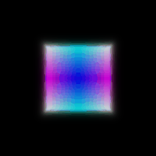
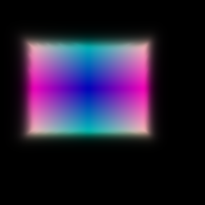
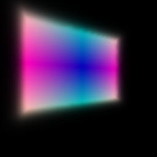
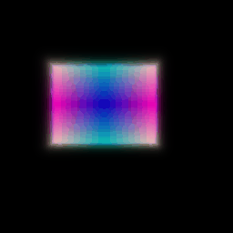
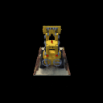

*CMSC848F - Assignment 3*
*Submitted By: Akashkumar Parmar*
*UID: 118737430*
Differentiable Volume Rendering
===============================================================================
Ray Sampling
--------------------------------------------------------------------------------
Grid Visualization
Grid Visualization
Point Sampling
--------------------------------------------------------------------------------
Volume Rendering
--------------------------------------------------------------------------------


Visualization before training
Loss and training
--------------------------------------------------------------------------------
Visualization after training



Visualization
--------------------------------------------------------------------------------

Optimizing a Neural Radiance Field (NeRF)
===============================================================================
